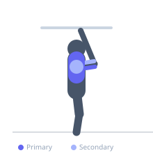
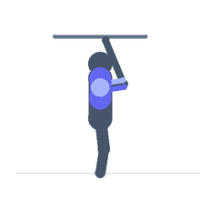

Exercise guide / Strict Muscle-Up
Strict Muscle-Up
The strict muscle-up is an advanced calisthenics movement requiring the lifter to transition from a dead hang to a straight-arm support position above a bar or rings using controlled pulling and pressing strength — without momentum or kipping. It demands exceptional lat, biceps, and triceps strength alongside scapular and core stability.
Primary muscles
latissimus dorsi
triceps brachii
Secondary muscles
biceps brachii
trapezius middle
deltoid anterior
Stabilizers
erector spinae
transverse abdominis
Equipment
Smith Machine
Optional
Gymnastic Rings


Starting position
- Hang from a pull-up bar with a false grip (wrists slightly over the bar) and a grip slightly narrower than shoulder width. Body in a hollow position.
Setup
- A false grip (wrist over the bar) is critical — it allows the transition from pulling to pressing without re-gripping. Practice the false grip on the bar before attempting a full rep.
Steps
- Step 1: Begin in a dead hang with a false grip and hollow-body tension.
- Step 2: Pull explosively and forcefully, bringing the chest high — above the bar if possible.
- Step 3: As the chest clears the bar, aggressively lean the torso forward over the bar.
- Step 4: Transition by pressing the bar down as the hips hinge over it, shifting to a support position.
- Step 5: Lock out the elbows to reach the dip support position at the top.
- Step 6: Lower back through the transition phase under control to the hanging start.
Coaching cues
- Pull the bar to your hips, not your chin
- Lean aggressively over the bar during the transition
- Think of it as a high pull followed by a triceps press-down
Breathing
- Inhale before initiating. Exhale through the pull phase. Hold through the transition.
Range of motion
- Dead hang to full lockout in the support position above the bar.
Tempo
- Explosive pull, controlled transition, 3s negative
Common mistakes
- Attempting without a false grip — the transition will be impossible without it
- Not pulling high enough to initiate the transition over the bar
- Using kipping momentum rather than pure strength
Safety
- Prerequisites: comfortably perform 15+ pull-ups and 15+ dips before attempting
- Build toward this movement with negative muscle-ups and weighted pull-ups
Training
- strength: 1–5 reps
- strength: 3–5 sets
- Rest: {'strength': 180}